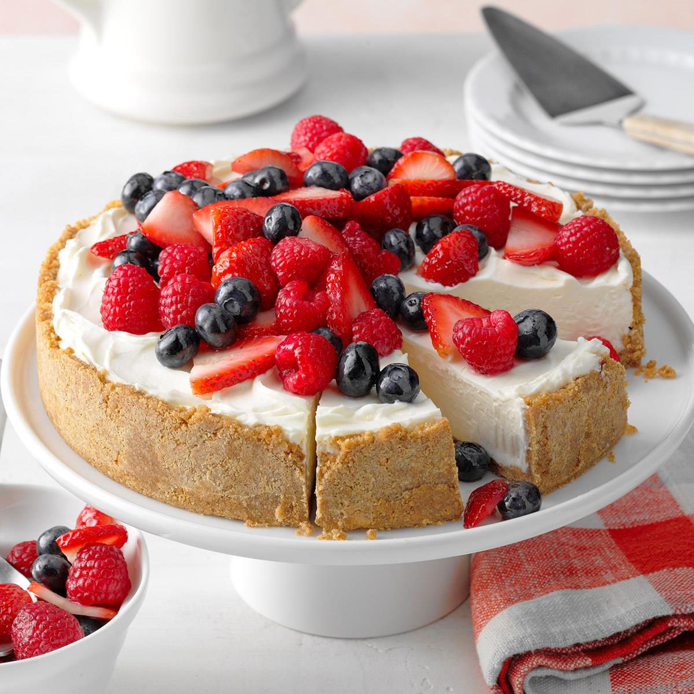

Ingredients
- 2 cups graham cracker crumbs
- 1/2 cup melted butter
- 3 packages (8 oz each) cream cheese, softened
- 1 cup granulated sugar
- 1 teaspoon vanilla extract
- 1 cup heavy cream
- Cherry or strawberry pie filling (for topping)
Method
- In a bowl, combine graham cracker crumbs and melted butter. Press the mixture into the bottom of a springform pan to form the crust.
- In a large mixing bowl, beat cream cheese, sugar, and vanilla extract until smooth
- In a separate bowl, whip the heavy cream until stiff peaks form. Gently fold the whipped cream into the cream cheese mixture.
- Pour the cream cheese filling over the crust in the springform pan
- Refrigerate for at least 4 hours or until set.
- Before serving, spread a layer of cherry or strawberry pie filling over the top.